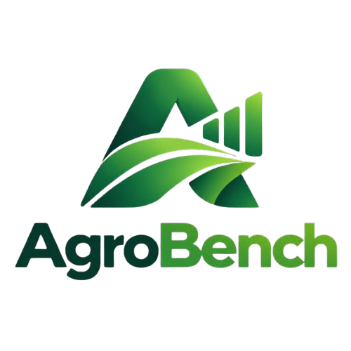
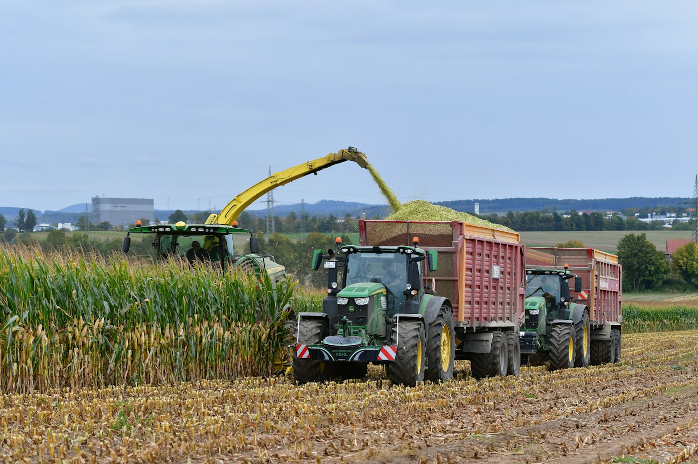
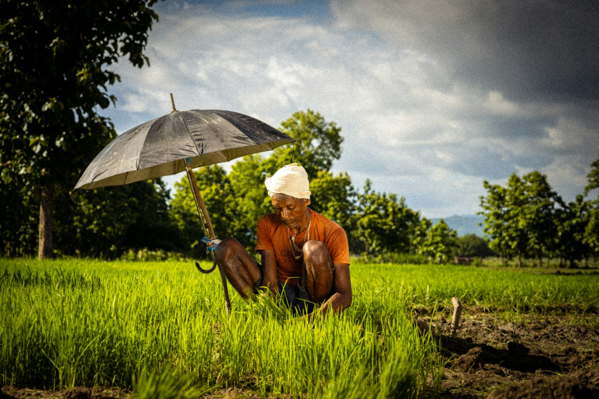
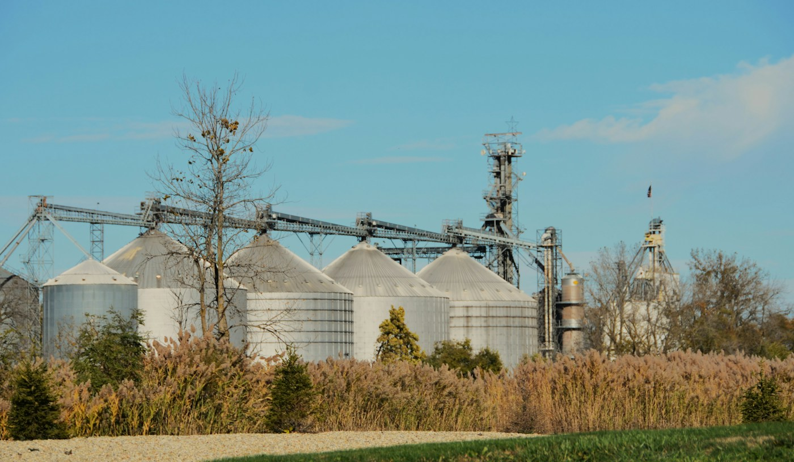
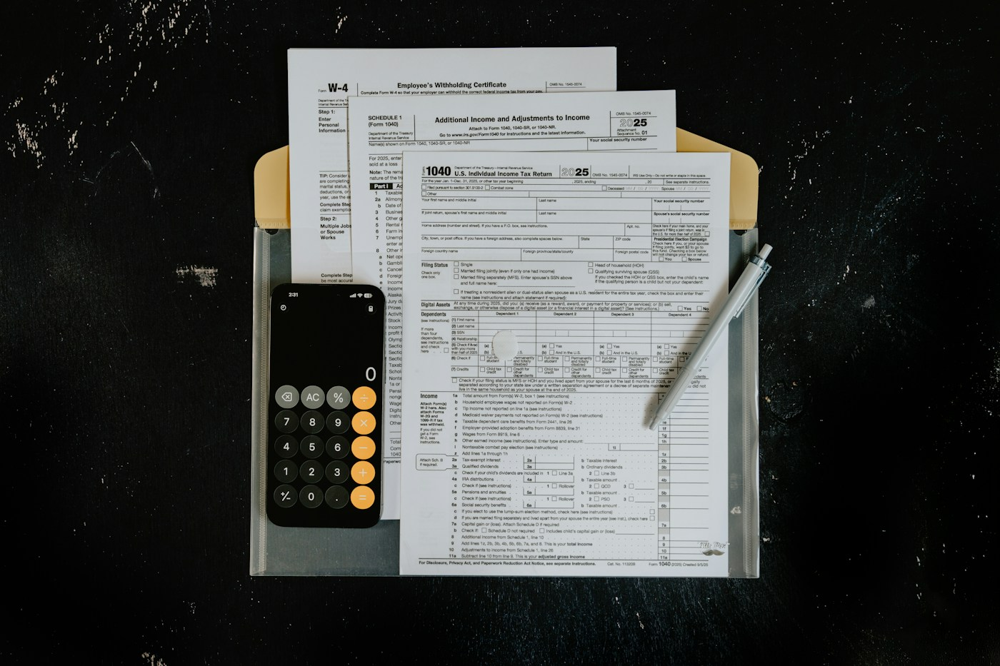
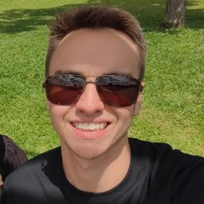

01 / 10

Custo/ha · insumos · produtividade
Risco · crédito · planejamento · modelos
Compra antecipada (jan–abr) × tardia (mai–jul) de fertilizantes para soja 2025/26; simulação em valores de jul/2025 (IGP-DI). Fonte: Projeto Campo Futuro · CNA/Senar/Esalq-Cepea.

Safra · solo · clima · custos
Formato · duplicidade · limites

Contexto · coerência · exceções
Aceite · retorno
Solana após aprovação
Crédito · seguro · risco

Insumos · armazenagem · serviços
Treino · padrões · previsão
Real · mensal · anual · projeto

Nota fiscal · tributos
Parcela da receita líquida
Taxa fixa de 30%
70% restante · Solana
Safra · país · estado
Preços · commodities
Curadoria · agregado · recompensa
